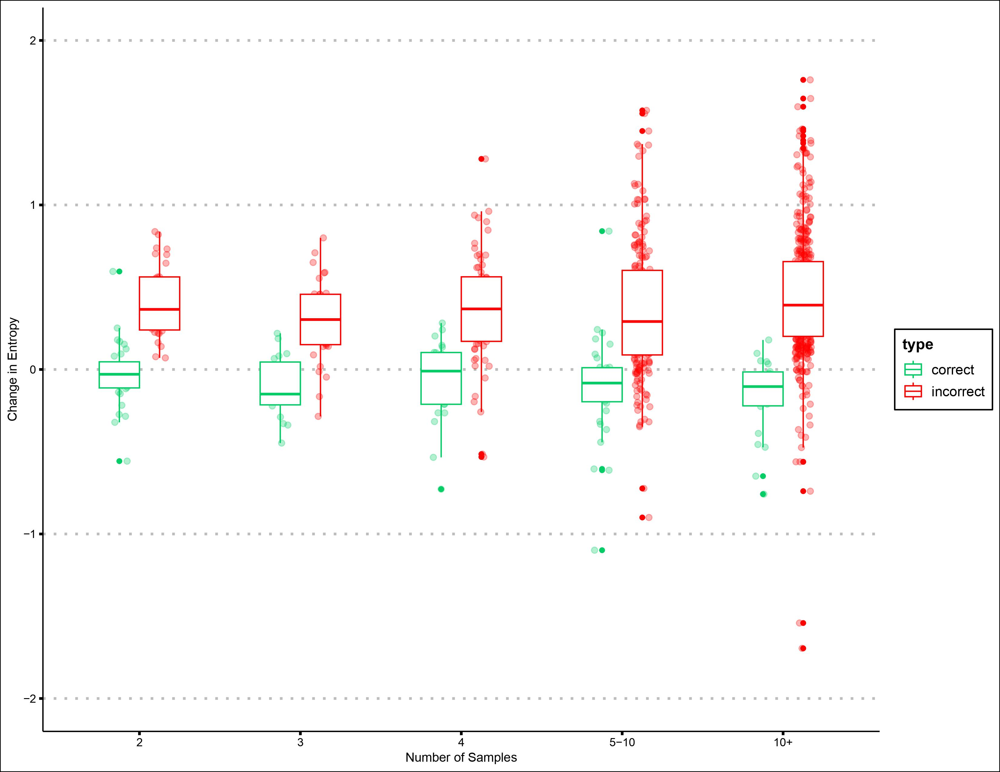
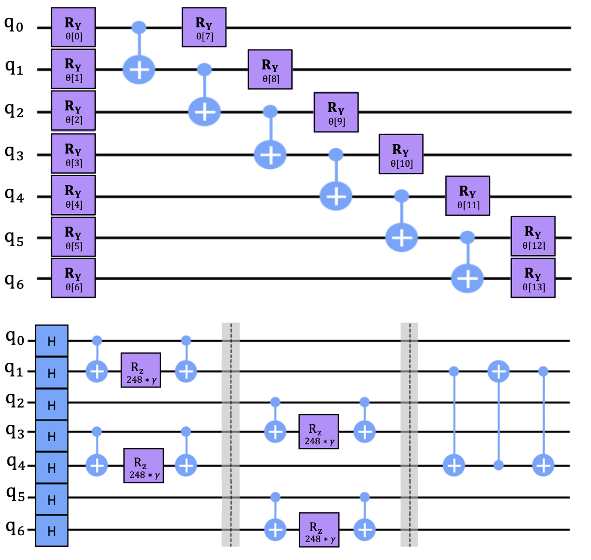
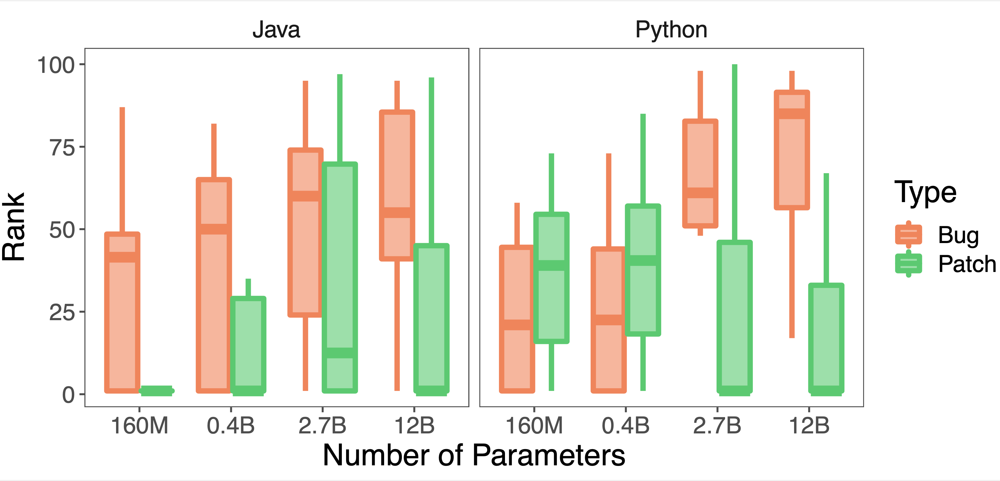
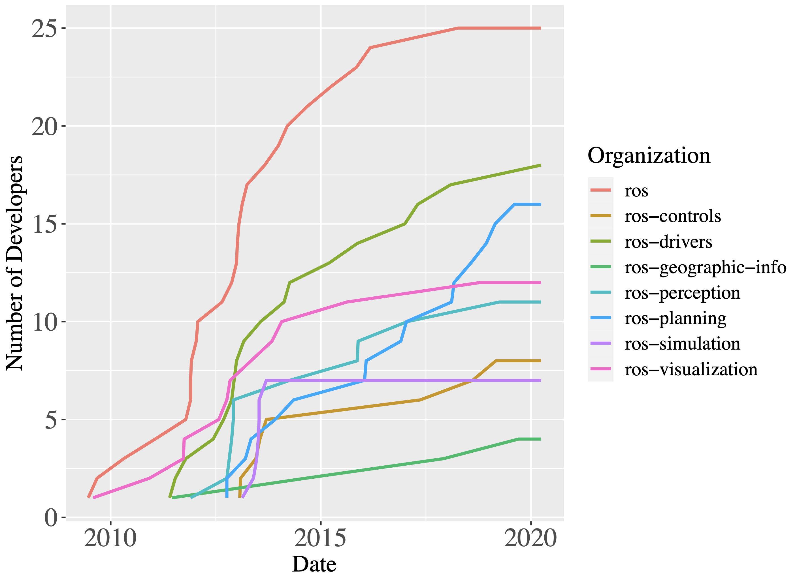
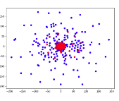
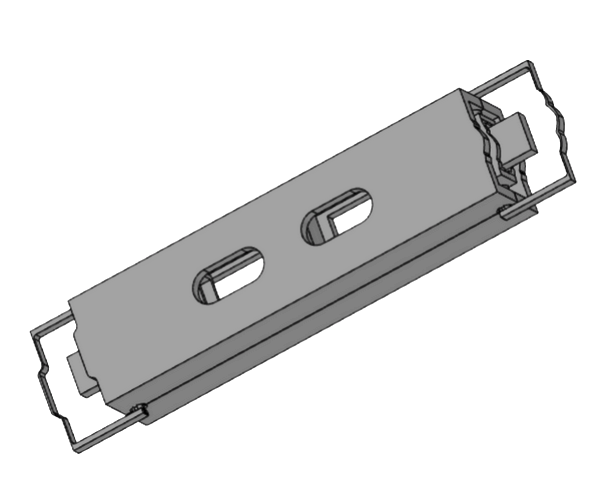
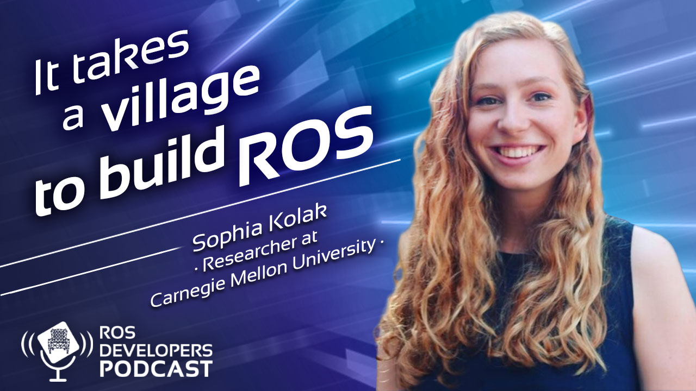
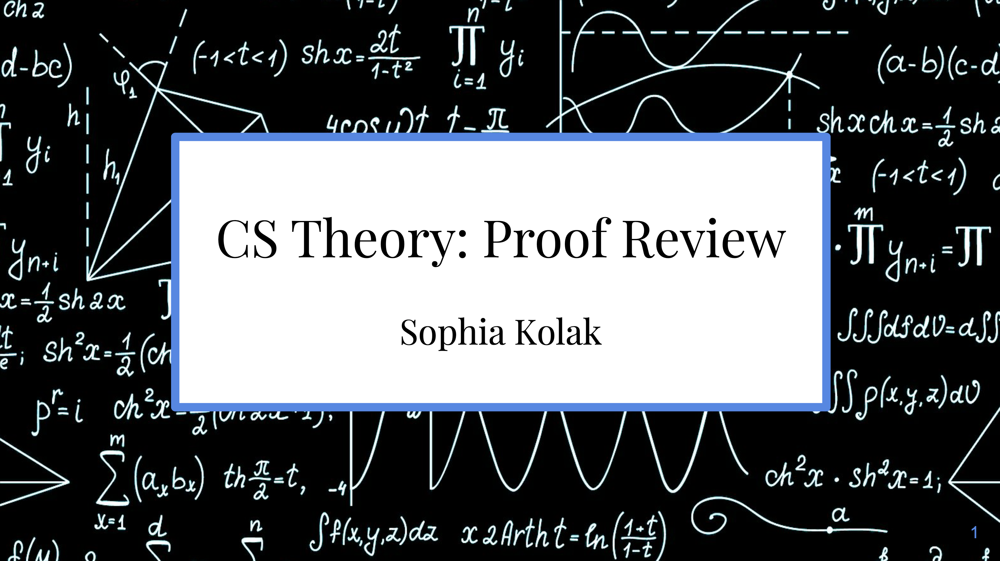

Sophia Kolak
PhD student @ CMU's S3D, advised by Claire Le Goues, Vincent Hellendoorn, and Ruben Martins, where I study LLMs fine-tuned on source code and automatic program repair. I also worked at IBM Quantum, studying how quantum algorithms for graph partioning could be used to improve linear solvers. Prior to that, I was a student at Columbia University, where I worked in the ARiSE lab using machine learning to predict the efficiency of programs.
email: sdk2147@columbia.edu cv: pdf
Publications
|  |
Revisiting Unnaturalness for Automated Program Repair in the Era of Large Language Models |
|  |
Evaluating Quantum Algorithms For Linear Solver Workflows |
|  |
Patch Generation with Language Models: Feasibility and Scaling Behavior |
|  |
It Takes a Village to Build a Robot: An Empirical Study of the ROS Ecosystem |
|  |
Detecting Performance Patterns with Deep Learning |
|  |
SHIRLEE: A Sharp-edge Handheld Identifier and Remover in Low-gravity Extravehicular Environments |
Presentations
 |
Quantum Algorithms for Linear Solvers |
 |
Patch Generation with Large Language Models |
 |
Robotics Software Quality Panelist |
|  |
ROS Developers Podcast |
 |
It Takes a Village to Build a Robot |
Teaching
|
MLG 10615: Art & Machine Learning Carnegie Mellon University, Spring 2023 |
|
|  |
COMS W3261: Computer Science Theory Columbia University, Fall 2019-Spring 2021 |